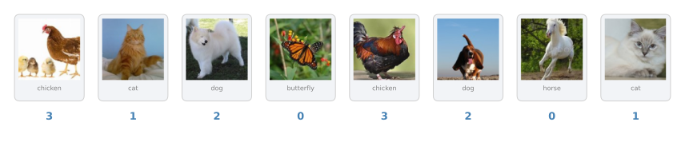
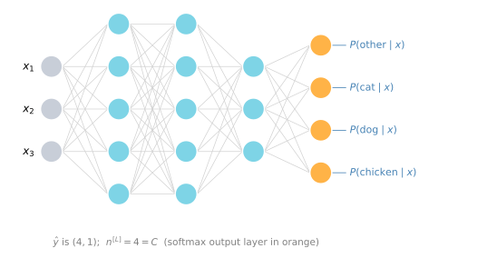
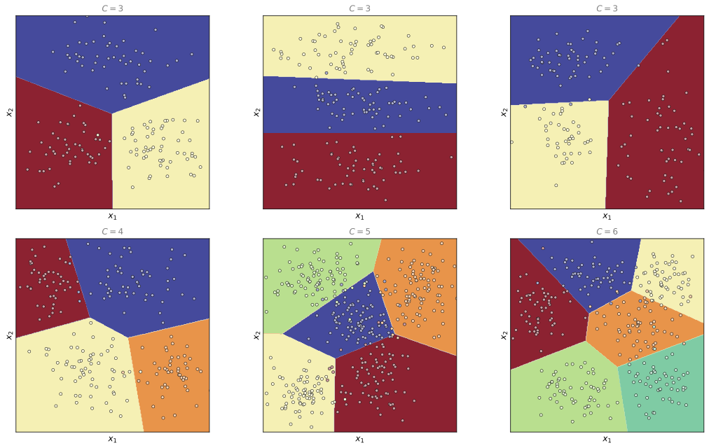

Softmax Regression
deep-learning
softmax
multi-class-classification
cross-entropy
How softmax generalizes logistic regression to C classes, with a worked example, linear decision boundaries, cross-entropy loss, and backprop.
So far, the classification examples we have talked about used binary classification, where you had two possible labels, 0 or 1. Is it a cat, is it not a cat? What if we have multiple possible classes? There is a generalization of logistic regression called softmax regression that lets you make predictions where you are trying to recognize one of \(C\) classes, rather than just two.
Recognizing One of Many Classes
Say that instead of just recognizing cats you want to recognize cats, dogs, and chickens (the lecture uses baby chicks; the images here use chickens). Call cats class 1, dogs class 2, chickens class 3, and if the image is none of the above, there is an other class, class 0. With four possible classes like this, the notation we use is capital \(C\) for the number of classes your inputs can be categorized into, so here \(C = 4\), and the numbers indexing the classes run from \(0\) through \(C - 1\), that is, 0, 1, 2, 3.
We are going to build a neural network whose output layer has \(C\) units, so \(n^{[L]} = 4\), or in general \(n^{[L]} = C\). What we want is for each unit in the output layer to tell us the probability of one of the classes. The first node should output \(P(\text{other} \mid x)\), the next \(P(\text{cat} \mid x)\), the next \(P(\text{dog} \mid x)\), and the last \(P(\text{chicken} \mid x)\). The output \(\hat{y}\) is therefore a \((4, 1)\) dimensional vector containing these four probabilities, and because they are probabilities, the four numbers should sum to 1.

The standard model for getting your network to do this uses a softmax layer as the output layer.
Softmax Activation Function
In the final layer of the network you first compute the linear part as usual,
\[ z^{[L]} = W^{[L]} a^{[L-1]} + b^{[L]} \]
In our example \(z^{[L]}\) is a \((4, 1)\) vector. Then you apply the softmax activation function, which is a bit unusual. First compute a temporary variable \(t\) by exponentiating element-wise,
\[ t = e^{z^{[L]}} \]
so \(t\) is also a \((4, 1)\) vector. The output \(a^{[L]}\) is then the vector \(t\) normalized to sum to 1,
\[ a^{[L]} = \frac{e^{z^{[L]}}}{\sum_{i=1}^{4} t_i} \]
In other words, the \(i\)-th element of the output is
\[ a^{[L]}_i = \frac{t_i}{\sum_{j=1}^{4} t_j} \]
where the sum in the denominator runs over all four entries of \(t\) (in the general case, over all \(C\) of them).
NoteConsistent Subscripts
The lecture slide mixes the subscripts \(i\) and \(j\) inside this formula, writing the denominator sum over \(j\) of \(t_i\). As the course clarification points out, the subscript should be consistent throughout. The forms above are the corrected ones, one index for the output element and one dummy index for the sum.
In case this math is not clear, a specific example will make it clearer. Say your computed \(z^{[L]}\) is
\[ z^{[L]} = \begin{bmatrix} 5 \\ 2 \\ -1 \\ 3 \end{bmatrix} \]
Element-wise exponentiation gives
\[ t = \begin{bmatrix} e^{5} \\ e^{2} \\ e^{-1} \\ e^{3} \end{bmatrix} = \begin{bmatrix} 148.4 \\ 7.4 \\ 0.4 \\ 20.1 \end{bmatrix} \]
To go from \(t\) to \(a^{[L]}\), normalize the entries to sum to 1. Adding up those four numbers gives \(176.3\), so \(a^{[L]} = t \,/\, 176.3\),
\[ a^{[L]} = g^{[L]}(z^{[L]}) = \begin{bmatrix} e^{5} / (e^{5} + e^{2} + e^{-1} + e^{3}) \\ e^{2} / (e^{5} + e^{2} + e^{-1} + e^{3}) \\ e^{-1} / (e^{5} + e^{2} + e^{-1} + e^{3}) \\ e^{3} / (e^{5} + e^{2} + e^{-1} + e^{3}) \end{bmatrix} = \begin{bmatrix} 148.4 / 176.3 \\ 7.4 / 176.3 \\ 0.4 / 176.3 \\ 20.1 / 176.3 \end{bmatrix} = \begin{bmatrix} 0.842 \\ 0.042 \\ 0.002 \\ 0.114 \end{bmatrix} \]
So for this image, if this is the value of \(z^{[L]}\) you get, the chance of class 0 is 84.2%, the chance of class 1 is 4.2%, the chance of class 2 is 0.2%, and the chance of class 3, the chicken class, is 11.4%. The output \(a^{[L]}\), which is also \(\hat{y}\), is a \((4, 1)\) vector holding these four probabilities, which sum to 1.
If we summarize the computation from \(z^{[L]}\) to \(a^{[L]}\), the element-wise exponentiation into the temporary variable \(t\) followed by the normalization, we can write it as a softmax activation function,
\[ a^{[L]} = g^{[L]}(z^{[L]}) \]
The unusual thing about this activation function is that it takes a \((4, 1)\) vector as input and outputs a \((4, 1)\) vector. Previously, our activation functions took a single real number as input; the sigmoid and ReLU activation functions each input a real number and output a real number. Because softmax needs to normalize across the different possible outputs, it takes a vector and outputs a vector.
What a Softmax Layer Can Represent
To build intuition for what a softmax layer can represent, consider a network with inputs \(x_1, x_2\) feeding directly into a softmax output layer with \(C\) output nodes, and no hidden layer. All it computes is \(z^{[1]} = W^{[1]} x + b^{[1]}\), and the output \(a^{[1]} = \hat{y}\) is the softmax activation function applied to \(z^{[1]}\).

These plots were made the way described in the lecture. A training set like the points shown was used to train a softmax classifier, and the shading shows, for each point of the input space, which of the outputs has the highest probability. The top row shows three different examples with \(C = 3\) output classes; the softmax layer produces several linear decision boundaries that separate the data into three classes. The bottom row shows that it keeps doing so with more classes, \(C = 4\), \(C = 5\), and \(C = 6\). You can see it as a generalization of logistic regression with linear decision boundaries, but instead of the class being 0 or 1, the class can be 0, 1, or 2, or more.
One intuition to take away is that the decision boundary between any two classes is linear. That is why, between any pair of neighboring colored regions in these plots, the border is a straight line. The softmax layer uses these different linear functions to separate the space into \(C\) classes. This is what softmax can do when there is no hidden layer; with a much deeper neural network, with \(x\), then some hidden units, then more hidden units, and so on, you can learn even more complex nonlinear decision boundaries to separate out multiple classes.
Review Questions
1. Given \(z^{[L]} = [5, 2, -1, 3]^T\), walk through the softmax computation. What do the outputs represent?
TipAnswer
First exponentiate element-wise, \(t = [e^5, e^2, e^{-1}, e^3]^T = [148.4, 7.4, 0.4, 20.1]^T\). Then normalize by the sum \(\sum_j t_j = 176.3\), giving \(a^{[L]} = [0.842, 0.042, 0.002, 0.114]^T\). Each entry is the estimated probability of one of the \(C = 4\) classes given the input, and the entries sum to 1. The largest entry of \(z^{[L]}\) (here 5) always yields the largest probability.
1. What makes the softmax activation function unusual compared to sigmoid or ReLU?
TipAnswer
Sigmoid and ReLU take a single real number as input and output a real number, applied element by element. Softmax must normalize across all the output units, so it takes a whole vector (\(C\) by 1) as input and outputs a vector of the same dimension whose entries sum to 1.
1. What kinds of decision boundaries can a softmax output layer with no hidden layer represent?
TipAnswer
Linear ones. The decision boundary between any two classes is a straight line, so the input space is carved into \(C\) regions by linear boundaries, a generalization of logistic regression to more than two classes. To get complex nonlinear boundaries between multiple classes, you add hidden layers in front of the softmax output layer.
Training a Softmax Classifier
Recall the earlier example where, with \(C = 4\), the output layer computes the \((4, 1)\) vector \(z^{[L]} = [5, 2, -1, 3]^T\), the temporary variable \(t\) exponentiates element-wise, and the softmax activation function \(g^{[L]}\) normalizes \(t\) to sum to 1, giving \(a^{[L]} = [0.842, 0.042, 0.002, 0.114]^T\). Notice that the biggest element of \(z\) was 5, and the biggest probability ends up being the first one.
Softmax vs. Hard Max
The name softmax comes from contrasting it with what is called a hard max, which would take the vector \(z\) and map it to
\[ \begin{bmatrix} 5 \\ 2 \\ -1 \\ 3 \end{bmatrix} \xrightarrow{\;\text{hard max}\;} \begin{bmatrix} 1 \\ 0 \\ 0 \\ 0 \end{bmatrix} \]
A hard max looks at the elements of \(z\) and just puts a 1 in the position of the biggest element and 0s everywhere else. In contrast, softmax is a more gentle mapping from \(z\) to probabilities. It is maybe not a great name, but that is the intuition behind it.
One thing alluded to earlier is that softmax regression generalizes logistic regression to \(C\) classes. In particular, if \(C = 2\), softmax essentially reduces to logistic regression. Here is a rough outline of why. With \(C = 2\), the output layer \(a^{[L]}\) outputs two numbers, say 0.842 and 0.158, and these two numbers always have to sum to 1. Because of that, they are redundant; you do not need to compute both, just one of them, and the way you end up computing that one number reduces to the way logistic regression computes its single output. That is not much of a proof, but the takeaway is that softmax regression is a generalization of logistic regression to more than two classes.
Loss Function
Now let us look at how you actually train a neural network with a softmax output layer, and in particular the loss function. Take an example in your training set where the ground truth label is
\[ y = \begin{bmatrix} 0 \\ 1 \\ 0 \\ 0 \end{bmatrix} \]
Following the earlier example, this is an image of a cat, because it falls into class 1. Say your neural network currently outputs the probability vector
\[ \hat{y} = a^{[L]} = \begin{bmatrix} 0.3 \\ 0.2 \\ 0.1 \\ 0.4 \end{bmatrix} \]
which you can check sums to 1. The network is not doing very well here, because this is actually a cat and it assigns only a 20% chance to the cat class.
The loss function used in softmax classification is
\[ \mathcal{L}(\hat{y}, y) = -\sum_{j=1}^{C} y_j \log \hat{y}_j \]
with \(C = 4\) in our case. Look at the single example above to understand what happens. In this example \(y_1 = y_3 = y_4 = 0\) and only \(y_2 = 1\), so in the summation all the terms with zero values of \(y_j\) vanish, and the only term left is
\[ \mathcal{L}(\hat{y}, y) = -y_2 \log \hat{y}_2 = -\log \hat{y}_2 \]
What this means is that if your learning algorithm is trying to make the loss small, using gradient descent to reduce the loss on the training set, the only way to do that is to make \(\hat{y}_2\) as big as possible, and these are probabilities, so it can never be bigger than 1. That makes sense, because if \(x\) is a picture of a cat, you want the output probability for the cat class to be as big as possible. More generally, what this loss function does is look at whatever is the ground truth class in your training set and try to make the corresponding probability of that class as high as possible. If you are familiar with maximum likelihood estimation in statistics, this turns out to be a form of maximum likelihood estimation, but if you do not know what that means, the intuition just described will suffice.
That is the loss on a single training example. The cost \(J\) on the entire training set, for a given setting of all the weights and biases, is pretty much what you would guess,
\[ J = \frac{1}{m} \sum_{i=1}^{m} \mathcal{L}(\hat{y}^{(i)}, y^{(i)}) \]
the average of the losses of your learning algorithm’s predictions over the training examples, and you use gradient descent to try to minimize this cost.
One more implementation detail. Because \(C = 4\), each \(y\) is a \((4, 1)\) vector and each \(\hat{y}\) is a \((4, 1)\) vector. If you are using a vectorized implementation, the matrix \(Y\) is \(y^{(1)}, y^{(2)}, \ldots, y^{(m)}\) stacked horizontally, so if the example above is the first training example, the first column of \(Y\) is \([0, 1, 0, 0]^T\); maybe the second example is a dog, the third is a none of the above, and so on, making \(Y\) a \((4, m)\) matrix,
\[ Y = \begin{bmatrix} y^{(1)} & y^{(2)} & \cdots & y^{(m)} \end{bmatrix} = \begin{bmatrix} 0 & 0 & 1 & \\ 1 & 0 & 0 & \cdots \\ 0 & 1 & 0 & \\ 0 & 0 & 0 & \end{bmatrix} \qquad (4, m) \]
Similarly \(\hat{Y}\) is \(\hat{y}^{(1)}, \ldots, \hat{y}^{(m)}\) stacked horizontally, with first column \([0.3, 0.2, 0.1, 0.4]^T\), the outputs on the first training example, also a \((4, m)\) matrix,
\[ \hat{Y} = \begin{bmatrix} \hat{y}^{(1)} & \hat{y}^{(2)} & \cdots & \hat{y}^{(m)} \end{bmatrix} = \begin{bmatrix} 0.3 & \\ 0.2 & \cdots \\ 0.1 & \\ 0.4 & \end{bmatrix} \qquad (4, m) \]
Gradient Descent with a Softmax Output Layer
The output layer computes \(z^{[L]}\), which is \((C, 1)\), in our example \((4, 1)\), then applies the softmax activation function to get \(a^{[L]} = \hat{y}\), which in turn lets you compute the loss. That is the forward propagation step. How about backpropagation? It turns out that the key equation you need to initialize backprop is
\[ dz^{[L]} = \hat{y} - y \]
where all three are \((4, 1)\) vectors with four classes, or \((C, 1)\) in the general case. As usual, \(dz^{[L]}\) here denotes the partial derivative of the loss with respect to \(z^{[L]}\). If you are comfortable with calculus you can try to derive this yourself, but using the formula directly works fine if you need to implement this from scratch. With it you can compute \(dz^{[L]}\) and start off the backprop process to compute all the derivatives you need throughout the network.
In practice, when using a deep learning programming framework, you usually just need to focus on getting forward prop right; as long as you specify the forward pass, the framework figures out the backward pass for you. So this expression is worth keeping in mind in case you ever need to implement softmax classification from scratch, but a framework will take care of the derivative computation. With softmax classification you can now implement learning algorithms that categorize inputs into not just one of two classes, but one of \(C\) different classes. The deep learning programming frameworks themselves are the subject of a later section.
Review Questions
1. What is the difference between softmax and hard max, and how does softmax relate to logistic regression?
TipAnswer
A hard max maps \(z\) to a vector with a 1 in the position of the largest element and 0s everywhere else. Softmax instead maps \(z\) to a gentle vector of probabilities that sum to 1, with the largest \(z\) entry getting the largest probability. Softmax regression generalizes logistic regression to \(C\) classes; with \(C = 2\) the two outputs sum to 1 and are redundant, and computing just one of them reduces to how logistic regression computes its single output.
1. With \(y = [0, 1, 0, 0]^T\) and \(\hat{y} = [0.3, 0.2, 0.1, 0.4]^T\), what does the softmax loss reduce to, and what does minimizing it push the network to do?
TipAnswer
\(\mathcal{L}(\hat{y}, y) = -\sum_{j=1}^{4} y_j \log \hat{y}_j\), and since only \(y_2 = 1\), it reduces to \(-\log \hat{y}_2\). Minimizing it means making \(\hat{y}_2\), the probability assigned to the true class, as large as possible (it cannot exceed 1). In general, the loss looks at the ground truth class and pushes the predicted probability of that class as high as possible; it is a form of maximum likelihood estimation. The cost is the average loss, \(J = \frac{1}{m}\sum_i \mathcal{L}(\hat{y}^{(i)}, y^{(i)})\).
1. What is the key equation for initializing backpropagation with a softmax output layer, and do you usually need it in practice?
TipAnswer
\(dz^{[L]} = \hat{y} - y\), a \((C, 1)\) vector, the derivative of the loss with respect to \(z^{[L]}\). In practice, deep learning frameworks only require you to specify forward propagation and work out the backward pass automatically, so you mainly need this formula if you implement softmax classification from scratch.